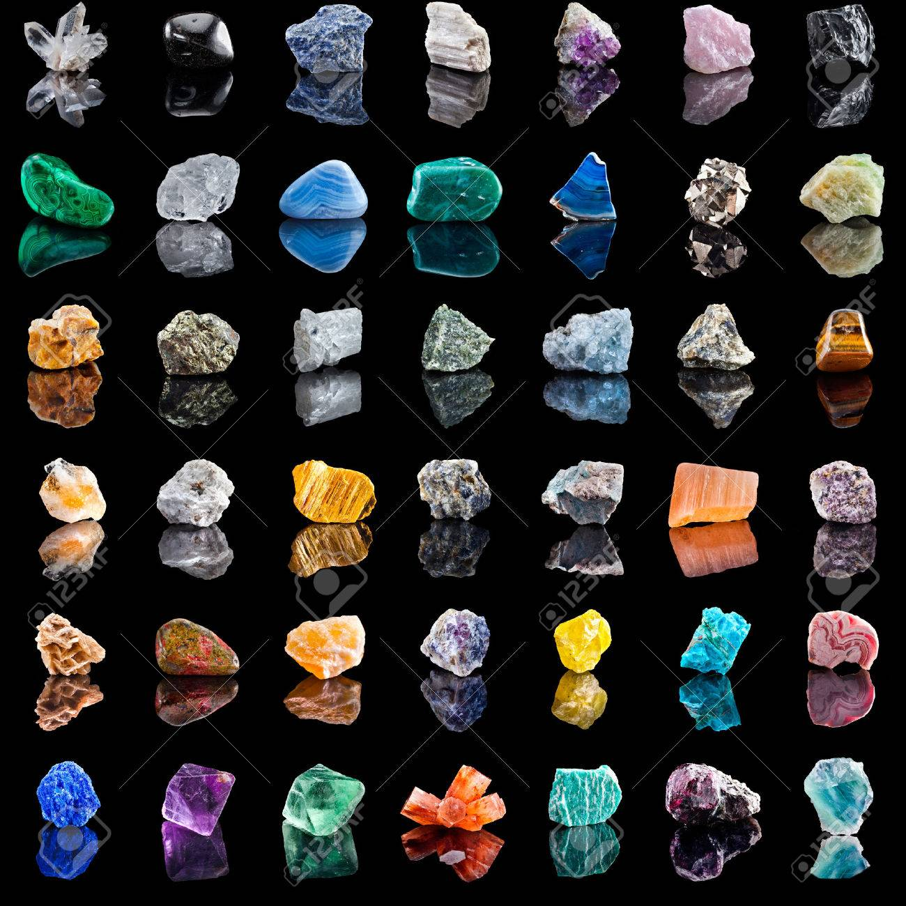
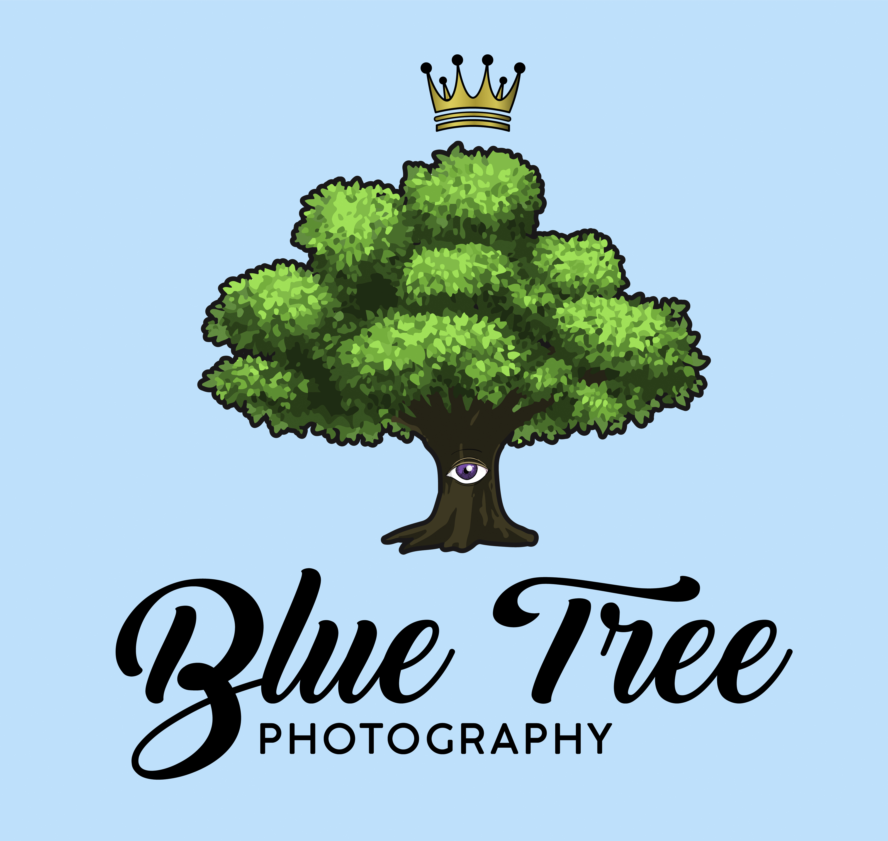

Gemstones & Geodes
I've had a fascination on Gemstones since I was a kid. The shine wasn’t the only thing to attract me, but also the color and energy within it. I was fixed. This fascination not only influenced my photography, but also my life. Gemstones have different energies within them that help combat problems within the world today. From helping you focus to stimulating certain feelings within you, gemstones have been used in meditation along with daily life for decades. What was once an eastern practice has now become a western one too.
My Photography Site
With Blue Tree Photography, I wanted to have a natural setting with each of my photos. Incorporating 3 key color schemes from nature which are Green, Sky Blue, and Purple. Photography is a way for me to release. I feel like I am able to see the world in my own "micro" view.
Click Here: Blue Tree Photography!
Brief History About Me
I'm an independent freelance photographer. I have an interest in psychology/philosophy, stocks/Forex, software development, and martial arts. My main focus are these 4 categories. Over time, I plan to continue building upon these traits of mine in hopes to become the best I can be.